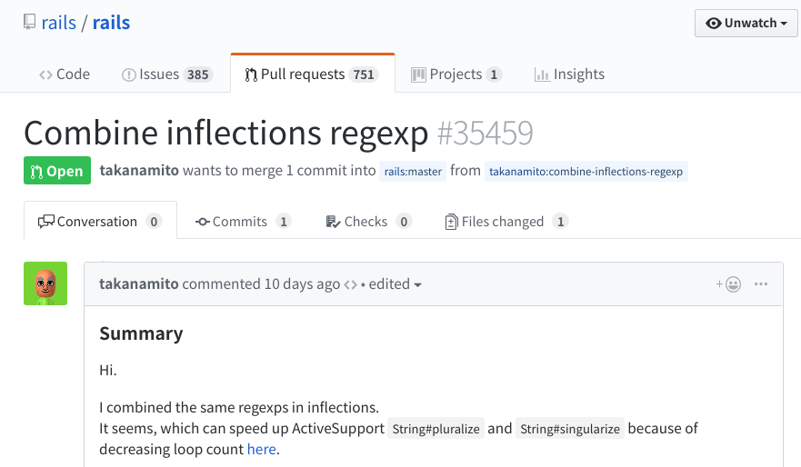

#35459
2019-03-14
平成.rb #2 @MedPeer
うなすけ
自己紹介
- 名前: うなすけ
- 所属: 株式会社バンク
- サーバーサイドエンジニア
- Twitter: @yu_suke1994
- GitHub: @unasuke
- Mastodon @unasuke@mstdn.unasuke.com
What is #35459 ?
パフォーマンスの話をします
rails/rails #35459
https://github.com/rails/rails/pull/35459rails/rails #35459
I combined the same regexps in inflections. It seems, which can speed up ActiveSupport String#pluralize and String#singularize because of decreasing loop count here.
まとめます
Diff #1
-inflect.plural(/(octop|vir)us$/i, '\1i')
-inflect.plural(/(octop|vir)i$/i, '\1i')
-inflect.plural(/(alias|status)$/i, '\1es')
+inflect.plural(/(octop|vir)(us|i)$/i, '\1i')
+inflect.plural(/(alias|status|x|ch|ss|sh)$/i, '\1es')
-inflect.plural(/(x|ch|ss|sh)$/i, '\1es')Diff #2
-inflect.plural(/([ti])um$/i, '\1a')
-inflect.plural(/([ti])a$/i, '\1a')
+inflect.plural(/([ti])(um|a)$/i, '\1a')Diff #3
-inflect.plural(/^(m|l)ouse$/i, '\1ice')
-inflect.plural(/^(m|l)ice$/i, '\1ice')
+inflect.plural(/^(m|l)(ouse|ice)$/i, '\1ice')Diff #4
+inflect.singular(/(o)es$/i, '\1')
-inflect.singular(/(o)es$/i, '\1') #行移動？
Diff #5
-inflect.singular(/(shoe)s$/i, '\1')
-inflect.singular(/(^analy)(sis|ses)$/i, '\1sis')
-inflect.singular(/(hive)s$/i, '\1')
-inflect.singular(/(tive)s$/i, '\1')
+inflect.singular(/(hive|tive|shoe|database)s$/i, '\1')
+inflect.singular(/(x|ch|ss|sh)es$/i, '\1')
-inflect.singular(/(x|ch|ss|sh)es$/i, '\1')
-inflect.singular(/(database)s$/i, '\1')結果
# Before
$ ruby benchmark.rb
user system total real
singularize: 19.505107 0.050181 19.555288 ( 19.627738)
pluralize: 17.912511 0.045848 17.958359 ( 18.021377)
# After
$ ruby benchmark.rb
user system total real
singularize: 19.403686 0.053767 19.457453 ( 19.535765)
pluralize: 17.578681 0.045741 17.624422 ( 17.687923)